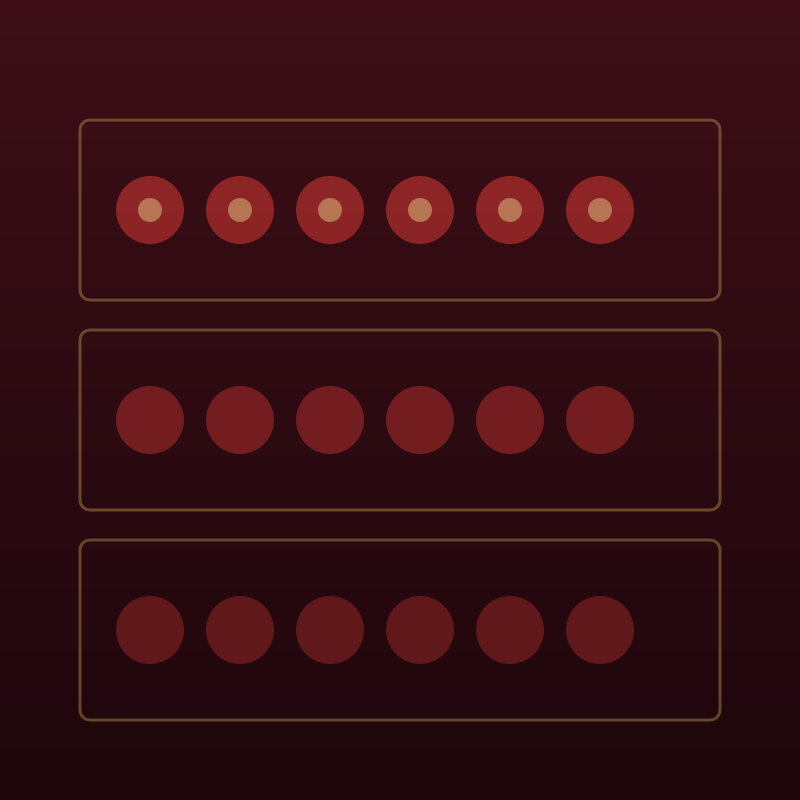

La cantina
ottanta etichette, quasi tutte del Lazio
Prima il Lazio
Per sessant'anni qui si è bevuto sfuso dei Castelli. Poi il Lazio ha cominciato a fare vini seri, e la cantina è cambiata: Cesanese dal Piglio e da Olevano, Bellone dalla costa di Anzio, Malvasia puntinata da Cori, Grechetto dall'alto viterbese.
Teniamo poche bottiglie per etichetta e le compriamo direttamente dai produttori, quasi tutti a meno di un'ora da qui. Fuori regione entra solo quello che ci serve davvero: qualche rosso di montagna, un Verdicchio, le bollicine.
Otto vini al calice cambiano ogni settimana: sono scritti sulla lavagna in sala. Se preferisce, il nostro Marco le porta due assaggi e sceglie lei.
Si beve anche a mezza bottiglia chieda in sala: apriamo volentieri

Al calice cambiano ogni settimana
Bianchi del Lazio bottiglia
Rossi del Lazio bottiglia
Fuori regione poche, scelte
La lista completa, ottanta etichette, è in sala
Diritto di tappo 12 € se porta una sua bottiglia. Le mezze bottiglie e i vini rimasti aperti si servono al calice fino a esaurimento. Acqua 2 €, caffè 1,50 €.